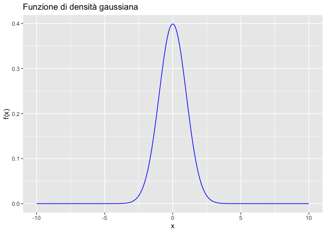

Appendice F — Per liberarvi dai terrori preliminari
F.1 Integrali
In questo capitolo, traduciamo e adattiamo il capitolo Per liberarvi dai terrori preliminari tratto da Calculus made easy.
F.1.1 Verifica con Simulazioni in R
Per calcolare e visualizzare l’integrale di una funzione di densità, possiamo utilizzare il linguaggio di programmazione R. Consideriamo come esempio la funzione di densità gaussiana, definita dalla seguente formula:
\[ f(x; \mu, \sigma) = \frac{1}{\sigma \sqrt{2 \pi}} e^{-\frac{(x - \mu)^2}{2 \sigma^2}}. \]
In R, possiamo definire questa funzione come segue:
Definiamo i parametri e generiamo i valori per il calcolo della funzione di densità su un intervallo:
Visualizziamo la funzione utilizzando il pacchetto ggplot2:
library(ggplot2)
library(scales)
ggplot(data.frame(x = x_range, fx = fx), aes(x, fx)) +
geom_line(color = "blue") +
labs(
title = "Funzione di densità gaussiana",
x = "x",
y = "f(x)"
)
Creiamo una funzione per approssimare l’integrale sommando i prodotti \(\Delta x \cdot f(x)\):
integral_approximation <- function(f, a, b, n) {
delta <- (b - a) / n
sum(delta * f)
}
# Calcolo dell'integrale approssimato
approx <- integral_approximation(fx, a, b, n)
approx[1] 0.9999Confrontiamo il risultato con il calcolo fornito dalla funzione integrate di R:
1 with absolute error < 7.4e-05Calcoliamo l’area sotto la curva in intervalli di interesse. Ad esempio, per \([-1.96, 1.96]\), che corrisponde al 95% dell’area nella distribuzione normale standard:
a <- -1.96
b <- 1.96
x_range <- seq(a, b, length.out = n)
fx <- gaussian(x_range, mu, sigma)
approx <- integral_approximation(fx, a, b, n)
approx[1] 0.9499321Confrontiamo con il risultato fornito da integrate():
0.9500042 with absolute error < 1e-11Verifichiamo l’area sotto la curva per \([-1, 1]\), che rappresenta circa il 68% dell’area totale:
a <- -1.0
b <- 1.0
x_range <- seq(a, b, length.out = n)
fx <- gaussian(x_range, mu, sigma)
approx <- integral_approximation(fx, a, b, n)
approx[1] 0.6826696Confronto:
0.6826895 with absolute error < 7.6e-15In sintesi, questo approccio dimostra come calcolare l’integrale di una funzione di densità in un intervallo utilizzando sia un metodo approssimativo basato sulla somma dei rettangoli sia il metodo numerico integrato. In entrambi i casi, l’obiettivo è calcolare l’area sotto la curva, che corrisponde all’integrale della funzione di densità.
F.2 Potenze
Le potenze sono un’operazione matematica che rappresenta un prodotto ripetuto. Si indicano generalmente come:
\[ a^n, \]
dove:
- \(a\) è la base,
- \(n\) è l’esponente.
La potenza rappresenta il prodotto della base \(a\) ripetuto \(n\) volte.
F.2.1 Definizione di potenza
\[ a^n = \underbrace{a \cdot a \cdot \dots \cdot a}_{n \text{ fattori}} \quad \text{con } n \in \mathbb{N}. \]
Ad esempio:
- \(2^3 = 2 \cdot 2 \cdot 2 = 8\),
- \(3^4 = 3 \cdot 3 \cdot 3 \cdot 3 = 81\).
F.2.2 Proprietà delle potenze
-
Moltiplicazione di potenze con la stessa base:
\[ a^m \cdot a^n = a^{m+n} \]
Esempio: \(2^3 \cdot 2^2 = 2^{3+2} = 2^5 = 32\).
-
Divisione di potenze con la stessa base:
\[ \frac{a^m}{a^n} = a^{m-n}, \quad \text{con } m \geq n. \]
Esempio: \(\frac{5^4}{5^2} = 5^{4-2} = 5^2 = 25\).
-
Potenze di potenze:
\[ (a^m)^n = a^{m \cdot n}. \]
Esempio: \((3^2)^3 = 3^{2 \cdot 3} = 3^6 = 729\).
-
Prodotto di potenze con basi diverse ma lo stesso esponente:
\[ a^n \cdot b^n = (a \cdot b)^n. \]
Esempio: \(2^3 \cdot 3^3 = (2 \cdot 3)^3 = 6^3 = 216\).
-
Divisione di potenze con basi diverse ma lo stesso esponente:
\[ \frac{a^n}{b^n} = \left(\frac{a}{b}\right)^n. \]
Esempio: \(\frac{4^2}{2^2} = \left(\frac{4}{2}\right)^2 = 2^2 = 4\).
-
Esponente zero:
\[ a^0 = 1, \quad \text{con } a \neq 0. \]
Esempio: \(5^0 = 1\).
-
Esponente negativo:
\[ a^{-n} = \frac{1}{a^n}. \]
Esempio: \(2^{-3} = \frac{1}{2^3} = \frac{1}{8}\).
-
Radice come potenza frazionaria:
\[ a^{\frac{1}{n}} = \sqrt[n]{a}, \quad a^{\frac{m}{n}} = \sqrt[n]{a^m}. \]
Esempio: \(8^{\frac{1}{3}} = \sqrt[3]{8} = 2\).
F.2.3 Esempi pratici
-
Calcolo semplice:
\[ 4^3 = 4 \cdot 4 \cdot 4 = 64. \]
-
Utilizzo delle proprietà:
\[ 3^5 \cdot 3^2 = 3^{5+2} = 3^7 = 2187. \]
-
Divisione:
\[ \frac{6^4}{6^2} = 6^{4-2} = 6^2 = 36. \]
-
Esponente negativo:
\[ 10^{-2} = \frac{1}{10^2} = \frac{1}{100} = 0.01. \]
-
Radice come potenza:
\[ 16^{\frac{1}{2}} = \sqrt{16} = 4. \]
F.2.4 Nota sui numeri razionali e reali
- Le potenze con esponenti interi sono definite per ogni base.
- Le potenze con esponenti frazionari o reali richiedono che la base sia positiva per evitare ambiguità.
F.3 Logaritmi
Il logaritmo è una funzione matematica che risponde alla domanda: “quante volte devo moltiplicare un certo numero (chiamato”base”) per ottenere un altro numero?” Matematicamente, questo è espresso come:
\[ \log_b(a) = x \iff b^x = a \]
Ad esempio, \(\log_2(8) = 3\) perché \(2^3 = 8\).
Nel contesto dei logaritmi, i valori molto piccoli (compresi tra 0 e 1) diventano più grandi (in termini assoluti) e negativi quando applichiamo una funzione logaritmica. Questo è utile per stabilizzare i calcoli, specialmente quando lavoriamo con prodotti di numeri molto piccoli che potrebbero portare a problemi di underflow.
Per esempio:
- \(\log(1) = 0\)
- \(\log(0.1) = -1\)
- \(\log(0.01) = -2\)
- \(\log(0.001) = -3\)
Come si può vedere, i valori assoluti dei logaritmi crescono man mano che il numero originale si avvicina a zero.
Una delle proprietà più utili dei logaritmi è che consentono di trasformare un prodotto in una somma:
\[ \log_b(a \times c) = \log_b(a) + \log_b(c) \]
Questa proprietà è estremamente utile in calcoli complessi, come nella statistica bayesiana, dove il prodotto di molte probabilità potrebbe diventare un numero molto piccolo e causare problemi numerici.
Un’altra proprietà utile dei logaritmi è che un rapporto tra due numeri diventa la differenza dei loro logaritmi:
\[ \log_b\left(\frac{a}{c}\right) = \log_b(a) - \log_b(c) \]
Anche questa proprietà è molto utilizzata in matematica, specialmente in situazioni in cui è necessario normalizzare i dati.
In sintesi, i logaritmi sono strumenti potenti per semplificare e stabilizzare i calcoli matematici. Essi consentono di lavorare più agevolmente con numeri molto grandi o molto piccoli e di trasformare operazioni complesse come prodotti e divisioni in somme e differenze, rendendo i calcoli più gestibili e meno inclini a errori numerici.